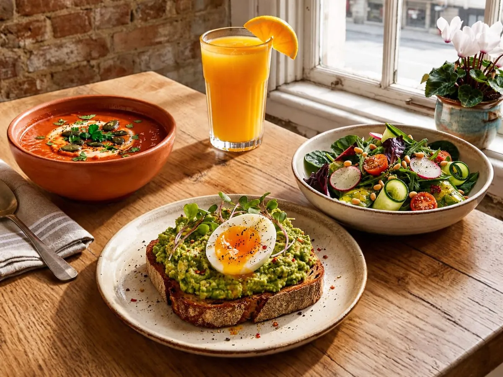

Lunchen in Nijmegen: de leukste lunchplek per wijk
Bijgewerkt op 22 november 2026.
In de binnenstad zit je nooit ver van een goede lunch, maar ook in de wijken zijn er plekken waar je graag blijft hangen. Daarom zetten we per wijk de lunchzaken op een rij die wij aanraden. Zo vind je ook een goede lunch als je niet in het centrum bent.

Zo hebben we gekozen
We lazen in november 2026 de websites van de lunchzaken in onze bedrijvengids. Per wijk kozen we de plekken die er iets eigens van maken, van smørrebrød tot een lunch met uitzicht op de Spiegelwaal.
Centrum
De Bruijn: kleine gerechtjes onder de Stevenstoren
Op de Grote Markt stel je je lunch samen uit kleine gerechtjes: broodjes, salades, soepjes en steamed buns. Met je tafelgenoten vul je samen één kaartje in.
De Bruijn is alleen overdag open, 's ochtends ook voor ontbijt. Reserveren doe je via WhatsApp.
Goed voor: samen proeven en delen.
Fika: Zweeds lunchen met smørrebrød
In de Van Broeckhuysenstraat bestel je smørrebrød, rijk belegde boterhammen op desembrood. Bij de koffie eet je kanelbulle of kladdkaka.
Er is een kinderkaart en een kast met spelletjes. Tussen twaalf en drie is het lunchcafé laptopvrij, en in de kiosk ernaast haal je eten om mee te nemen.
Goed voor: een rustige lunch met kinderen.
Lunchbar de Viking: stevig, met de hond erbij
Aan het eind van de Lange Hezelstraat eet je avocadotoast met ei of een pittige tosti met kip. Er zijn genoeg vega en vegan gerechten, en de taarten bakken ze zelf.
In de zomer zit je op het zonnige terras. Je hond is welkom, en met zes personen of meer kun je reserveren.
Goed voor: een stuk taart na het shoppen.
Nijmegen-Oost en rond de Groenestraat
Brasserie Jolie: elke week een nieuwe taart
Aan de Daalseweg wordt alles in de eigen keuken gemaakt, zoveel mogelijk met lokale producten. Veel vaste gasten komen terug voor de pulled chicken.
Elke week is er een nieuwe taart, soep en bananenbrood. Glutenvrij brood is er altijd, en je hond mag mee naar binnen. Er wordt geen alcohol geschonken.
Goed voor: een lunch met vriendinnen.
Puux: biologisch op de Hazenkamp
Vlak bij het Goffertpark koken Karsten en Maria zoveel mogelijk biologisch, met producten van de buren in de straat. Je eet broodjes, een salade tikka of de soep van de week.
Er is ook ambachtelijk ijs. Eet je vegan of glutenvrij, dan heb je hier echt wat te kiezen. Puux is van woensdag tot en met maandag overdag open.
Goed voor: wie vegan of glutenvrij eet.
De Kantine van Bairro Alto: verstopt op het Splendorterrein
Via een smal zijstraatje van de Groenestraat kom je bij De Kantine, dat binnen voelt als een huiskamer. Bij mooi weer zit je in het tuintje.
Na het ontbijt eet je avocadotoast, een kimchi-tosti of een brioche met pulled oesterzwam. De taart komt uit de eigen bakkerij ernaast.
Goed voor: een lunch op een plek die je niet zomaar vindt.
Nijmegen-West
Wijck: belegde boterhammen aan de Voorstadslaan
Bij Wijck eet je bijvoorbeeld oude kaas met uienchutney, gerookte kip met avocado en spek, of burrata met gegrilde groenten. Voor de kleinste gasten is er een kinderboterham.
Na de lunch borrel je tot acht uur 's avonds door. Op maandag is Wijck dicht.
Goed voor: een lunch die overgaat in een borrel.
Café PUNT: koffie op het Honigterrein
In de industriële punt van cultuurplek BLIK, op het Honigterrein, kies je tussen de middag uit stevige baguettes, bijvoorbeeld met runderwang of een vegan versie met oesterzwam.
De kaart wisselt regelmatig. Later op de middag zit je op het terras met een borrel.
Goed voor: even ontsnappen aan de drukte van het centrum.
Lent
AN: vanaf acht uur open aan de Waalsprong
AN is de zusterzaak van Bairro Alto en De Kantine, met de natuur en de Waal op de achtergrond. De lunchkaart heeft klassiekers van de zusterzaken en een paar eigen gerechten.
AN is elke dag open van acht tot vijf. Reserveren kan niet, dus loop gewoon binnen.
Goed voor: een ontbijt of lunch in Nijmegen-Noord.
Fabrikaat: eten van servies uit rivierklei
Bij Fort Beneden-Lent werken ontwerpers met rivierklei. In het café zit je in de serre of in de tuin, met uitzicht op de Spiegelwaal, en je eet van servies dat ze hier zelf maakten.
Het café is alleen open van vrijdag tot en met zondag. Combineer je bezoek met een workshop of rondleiding.
Goed voor: een fietstochtje in het weekend.
Nijmegen-Zuid
Meneer Vos: met een speeltuin erbij
Aan de Winkelsteegseweg eet je broodjes van Buurtmarkt Breedeweg en drink je koffie van Coffyn. Mensen met een beperking werken hier in de keuken en de bediening, met begeleiding van Pluryn.
Binnen is een speelhoek, en buiten staan speeltoestellen en een zandbak. Ook je hond is welkom, aangelijnd.
Goed voor: een lunch met jonge kinderen.
Madame Liberty: de hele dag brunch
Aan het Vierdaagseplein draait alles om brunch die de hele dag doorgaat: eieren zoals jij ze wilt, avocadotoast en hoge stapels pancakes.
Je kunt er ook werken aan een lange tafel. Madame Liberty is elke dag open van half elf tot zes uur.
Goed voor: een late, luie lunch.
Ook goed
- De Derde Kamer aan de Grote Markt, met vegetarische en glutenvrije gerechten.
- Loek in de Van Broeckhuysenstraat, met een terras.
- The Lobby aan de Mariënburg, voor ontbijt en lunch met veel vegan keuze.
Liever ontbijten? Lees de 7 beste plekken om te ontbijten in Nijmegen. Onze eerdere tips staan in lunchen in Nijmegen: de beste plekjes.
Meer in onze gids lunch, ontbijt en high tea in Nijmegen.
Veelgestelde vragen
Waar lunch je op de Grote Markt in Nijmegen?
Bij De Bruijn stel je je lunch samen uit kleine gerechtjes, met de Stevenstoren boven je. Ook De Derde Kamer zit aan de Grote Markt.
Waar lunch je met kinderen in Nijmegen?
Bij Meneer Vos is een speelhoek en een speeltuin. Fika heeft een kinderkaart en spelletjes, en Wijck heeft een kinderboterham.
Waar lunch je vegan in Nijmegen?
Puux aan de Groenestraat heeft veel vegan en glutenvrije keuze. Ook Lunchbar de Viking, PUNT en The Lobby hebben vegan gerechten.
Waar lunch je aan het water?
Bij Fabrikaat in Lent kijk je uit op de Spiegelwaal, en Café PUNT zit aan de Waalbandijk in West.